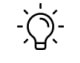

Oybek KarimjanovContact: +998900051616 Telegram: @Oybekarimjanov Mail: oybek.karimjanov13@gmail.com LinkedIn: www.linkedin.com/in/oybek-karimjanov Tashkent, Uzbekistan |
Java Developer - Tashkent, UZB
Java developer - responsible for card management, created apps which depend on automatic banking system, external marketplaces and management system.
Work experience from January 2021 to now
Tashkent University of Information Technology graduated in 2022
Tashkent University of Information Technology graduated in 2020
Band-6, level-B2. Certificate was taken in 2019
Level-B1
Native speaker
JavaCore, OOP, Spring-Boot, JPA, JDBC, Rest, WebFlux, Mysql, Postgresql, Docker, LiquiBase, Git, Monolithic, Microservice
Solid, MVC, Observer
Agile, Scrum
The project is aimed for clients to purchase an item for a certain amount of time from marketplaces and davrbank is responsible for payment. It is the form of integration.
The application was created for assessing bank employees’ effectiveness and getting feedback from clients about users.
The project is aimed for clients to purchase an item for a certain amount of time from marketplaces and davrbank is responsible for payment. It is the form of integration.
The app was created for installment(Рассрочка) in davrmarket.uz
|  | |||
| UX/UI | Problem Solving | Health Care | Open Source |